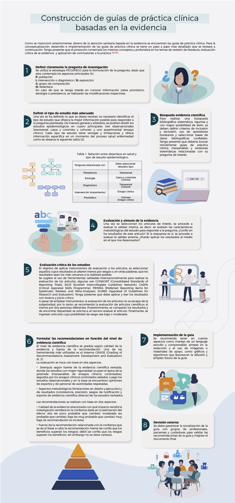

Ejercicio 1: Línea de tiempo sobre la evolución de la atención sanitaria basada en la evidencia
Ordene los sucesos propuestos teniendo en cuenta la secuencia lógica en la que se han producido. Para esto, se presentan los cuatro eventos más representativos dentro de la consolidación de esta práctica, y en los cuales se dispone la década y el origen de este avance. En los bloques de información encontrará un listado de objetivos e innovaciones respecto a la práctica de la medicina basada en la evidencia. Allí, debe arrastrar cada bloque de información correspondiente, tanto al objetivo, como a la innovación, en el orden que considere correcto.
| Año | Orígenes | Innovación | Objetivo |
|---|---|---|---|
| 70 | Archie Cochrane John Wennberg | ||
| 90 | Universidad de McMaster (Canadá) en colaboración con la Biblioteca de Cochrane (Reino Unido) | ||
| 90 | Instituto Nacional de Medicina (Estados Unidos) | ||
| 2000 | Organizaciones Internacionales (48 países y 100 organizaciones a nivel mundial) |
Medicina basada en la evidencia
La toma de decisiones en temas de salud se ha realizado, tradicionalmente, con base en el conocimiento aprendido durante el proceso formativo, la experiencia de la práctica profesional, las revisiones de textos y publicaciones, las consultas a pares, las pruebas de ensayo y error, y los lineamientos gubernamentales. A continuación, se plantean varios ejercicios para conocer más sobre este tema.
Ejercicio 2: Definiciones de medicina basada en la evidencia
Encuentre dos definiciones sobre medicina basada en la evidencia y las guías de práctica basadas en la evidencia.
Complete la definición correspondiente.
El profesor David Sackett de la Universidad de McMaster en Canadá la definió como “el uso concienzudo, explícito y juicioso de la mejor ... disponible para ... de decisiones para el cuidado individual de los pacientes […] Esta práctica [...] requiere la integración de la experiencia clínica individual con la mejor evidencia médica disponible obtenida de la investigación ..., y de los valores y circunstancias ... de nuestro paciente” (1).
Palabras:
Ejercicio 3. Verdad o mentira sobre la medicina basada en la evidencia
A continuación, aparecerán aseveraciones que deberá clasificar entre verdades y mentiras:
¡Ha finalizado!
Retroalimentación
Existe una tendencia a utilizar, de manera automática, el conocimiento obtenido a partir del entrenamiento y de las revisiones de publicaciones. Un profesional del área de la salud no está en capacidad de abarcar toda la información novedosa, y si lo hace, debe tener en consideración la calidad de dichas publicaciones.
¿Están los profesionales de la salud en capacidad de evaluar la validez de los artículos de revistas, la calidad de la metodología empleada y la veracidad de los resultados? Existen múltiples limitaciones de los estudios como el tamaño y no aleatorización de la muestra, el tipo de estudio realizado, los análisis estadísticos y la interpretación de resultados. Así mismo, existen sesgos conocidos como el de publicación, que dan énfasis a resultados con significación estadística e ignoran aquellos que no mostraron diferencias entre grupos de comparación (2).
Estas limitaciones, a la hora de poner en consideración qué información se utiliza en la toma de decisiones, han llevado a prácticas heterogéneas en la evaluación, el diagnóstico, el manejo terapéutico y la rehabilitación, exponiendo a los pacientes a pruebas o tratamientos que han mostrado ser ineficientes e incluso perjudiciales, lo que conlleva a riesgos, desenlaces desafortunados en salud y mayores costos al sistema.
Para mejorar el panorama, grupos de investigadores han realizado revisiones sistemáticas de publicaciones sobre diversos temas, y han generado recomendaciones útiles, actualizadas y rigurosas con la mejor evidencia disponible que permiten mejorar la toma de decisiones del profesional sanitario, y de toda la cadena del sistema de salud. Este proceder se denomina medicina basada en la evidencia, como también odontología basada en la evidencia y psicología basada en la evidencia, etc. Al conjunto de estos instrumentos, dentro de todo el espectro del campo de la salud, se le denomina atención sanitaria basada en la evidencia (2, 3).

Guía de práctica clínica
Según el Instituto Nacional de Medicina de Estados Unidos, las guías de práctica clínica son “recomendaciones desarrolladas sistemáticamente para asistir a los clínicos y a los pacientes en su toma de decisiones para una mejor calidad en la atención de la salud en condiciones específicas” (2).
Escoja las palabras que se relacionen con el concepto de Guía de práctica clínica.
- Investigación sistemática
- Experiencia clínica
- Recomendaciones
- Uso de tecnología sanitaria
- Experiencia clínica
- Costo-efectividad
- Calidad en la atención
- Integración de saberes
- Mejor evidencia
- Racionalidad
¿Qué son las guías de práctica clínica?
Las guías de práctica clínica son pieza clave de la atención sanitaria basada en la evidencia. Se definen como protocolos que integran investigaciones de revisión sistemática de la literatura disponible, experticia clínica, quirúrgica y disciplinar, y contextualización de los pacientes desarrollados por expertos metodológicos, clínicos, representantes de los pacientes y otras personas interesadas con la mejor evidencia disponible. Con base en preguntas clínicas contestadas por medio de revisiones sistemáticas de la literatura científica se elaboran recomendaciones clínicas específicas. Su objetivo es mejorar la atención en salud (4, 2, 3).
Este protocolo le permite al grupo de desarrollo de la guía establecer un marco general, plantearse preguntas clínicas relevantes de una manera estructurada, responderlas a través de revisiones sistemáticas de la literatura y redactar las recomendaciones clínicas específicas.

Se le invita a ubicar, en cada paso de la atención sanitaria basada en la evidencia, las acciones y los elementos que deben abordarse en cada paso. A continuación, tendrá cuatro pasos y múltiples elementos (5).
Definir claramente las preguntas de interés
Revisión de la literatura disponible
Evaluación crítica de la evidencia
Aplicación de las conclusiones a la práctica
Construcción de guías de práctica clínica basadas en la evidencia
Actividad de evaluación: Diseño de protocolo de guía práctica basado en la evidencia
Ahora cuenta con información necesaria para realizar un protocolo de guía de práctica clínica, se le invita a realizar su propio protocolo aplicado a un tema específico en salud. Seleccione la opción que más se relacione con su situación profesional o con su interés particular, entre la guía para un evento clínico y la guía para un evento quirúrgico.